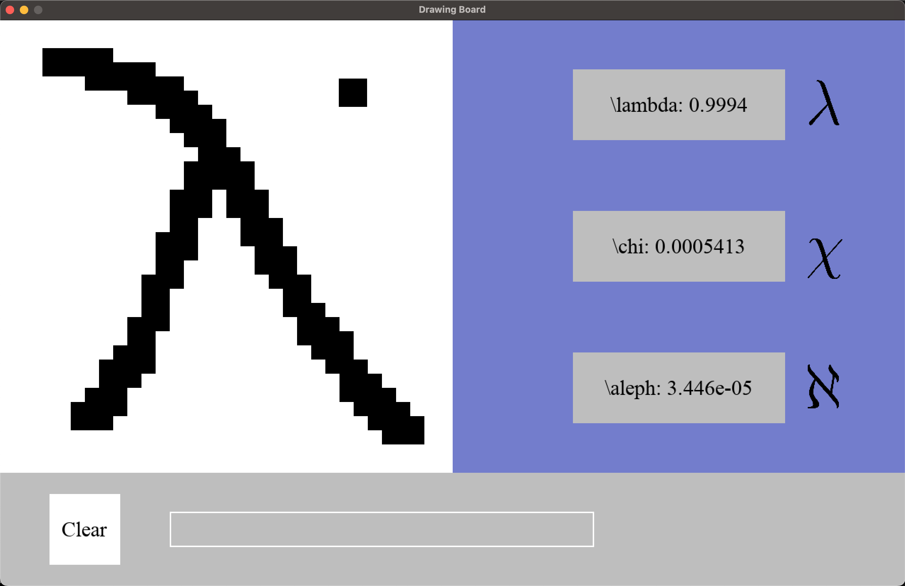

CNN Project¶
Introduction¶

Despite having previous experiences in developing CNNs in PyTorch, I’ve always felt overwhelmed by the number of different of ways that one can combine convolutional, max-pooling and linear layers - with different kernel sizes and padding sizes, strides, dilation and feature numbers.
My objective with this project was to develop skills in python and get used to using GitHub, while also exploring CNN architectures to find in practice which ones work best for different applications. This project will also serve as a portfolio.
The code’s documentation is done with Sphinx and can be found here.
Note: (12/01/2025) A pytorch lightning implementation is finished and pushed to the main branch.
Note: Work has been discontinued. A continuation would imply developing more varied CNN models. In particular, ones that do not use pooling (which seems to decrease dimensionality too quickly for this small problem).
The pygame interface works and can be run through the command line with python main.py. It is currently not documented.
The conda environment used can be found in the environment.yml.
Dataset¶
The dataset I’ve chosen to use is the HASYv2 dataset, because it has many more classes and symbols than other symbol recognition datasets such as MNIST, and the final models could perhaps be adapted in the future for translating handwritten equations (even if they are handwritten through a mouse pad of sorts) into LaTeX equations.
The pygame interface was developed so that the user may draw symbols in a 32x32 pixel grid with its mouse, which the trained net can try to identify it at the same time. The user can then add it live to the LaTeX equation. This application idea draws inspiration from Google’s Quick, Draw!.
Update 14/11/2021: I’ve found out through a friend that a website already exists for this: (http://detexify.kirelabs.org/symbols.html).
Note: In order to work with the dataset on Google Colab, I’ve tried uploading the data to Google Drive, which didn’t work because it has trouble dealing with such a big amount of data (even unzipping the files directly from Colab didn’t work). Because of this, I’ve organized them in a
datasets.HASYv2Datasetclass. However, it also can’t be uploaded here because it exceeds 100MB. If you wish to use the codes presented here, you need to unzip the dataset (which can be found here) in the_Datafolder (creating aHASYv2folder with all of its contents), and create adatasets.HASYv2Datasetobject.
Current State of Development¶
Base classes and a few models have already been defined, but development has been halted. Initially developed models did not achieve very good accuracies (at most ~60%), even with a batch size of 1. New models must be developed and trained.
In terms of the Pygame implementation, the UI could still be improved, but it is functional.
Objectives¶
Here’s list of a few objectives I had in mind when starting this project. It contains some things I have completed and others that I still want to complete.
[x] Understand decorators.
Although I understand how they work and how to implement them, I haven’t yet found much use. Yet.
[x] Understand context managers.
Not only have I understood how they work, I’ve developed the
main.ReportManagerclass specifically to deal with creating model reports, something I already used to do in a more manual way before.[x] Switch to Google’s Style.
Working on it!
[X] (WIP) Write a complete documentation with Sphinx.
[X] Implement an interface for real-time drawing and prediction.
Done with the PyGame module.
[X] Try to use PyTorch Lightning.
A Pytorchlightning implementation has been done.
[ ] Perhaps learn and use Optuna for selecting training and Neural Networks hyperparameters.
[ ] Develop more CNNs for testing.
[ ] Finish developing functions for evaluating trained model’s performances on the HASYv2 dataset.
Using the same parameters as the ones used in the article.
Contents: